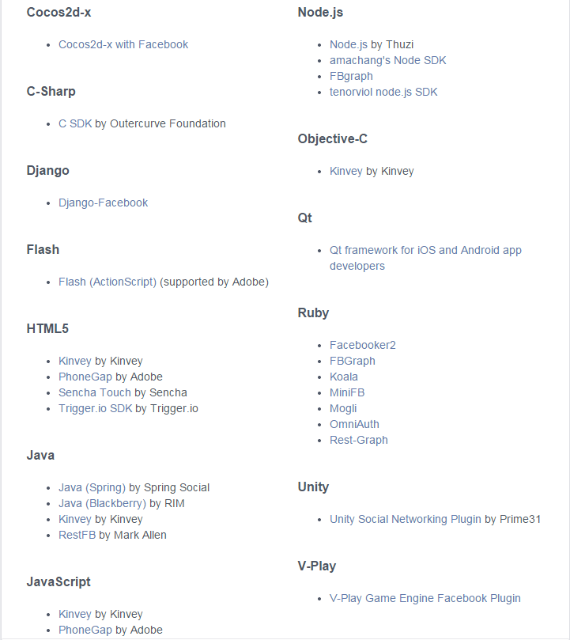
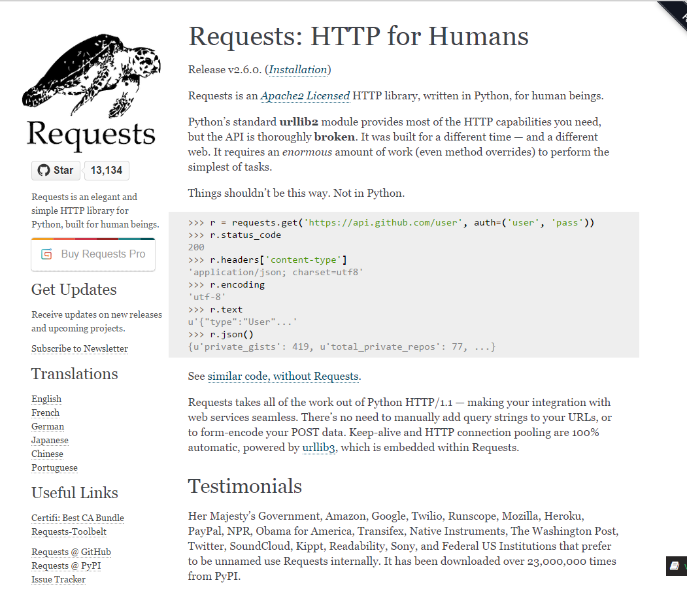

About Hayden Chudy
Backend Engineer at Croscon.
Originally from Southern Alabama, lived in NYC since March 2013.
Build cool projects for interesting clients.
Clients: Google and NASA.
What We'll Cover
What is an SDK and an API anyway?
How should I interact with an API?
How do I build my own SDK?
Some Quick Definitions
API - Application Programming Interface
SDK - Software Development Kit
REST - Representational State Transfer
API - a set of routines or protocols used to build or interact with a piece of software.
SDK Examples
Google's oauth2client - github.com/google/oauth2client
Instagram's Python API SDK - github.com/Instagram/python-instagram
Twitter's Python API SDK - github.com/bear/python-twitter
Tumblr's Python API SDK - github.com/tumblr/pytumblr
Google has one for Python.
Facebook's "Python SDK"

So, one begins to look for a FB SDK and this is what they find.
Facebook's "Python SDK"
Unofficial SDK's:
pythonforfacebook - github.com/pythonforfacebook/facebook-sdk
fb - github.com/blaklites/fb
So, we stumble upon two unofficial SDK's for Facebook written in Python.
Solution?
We'll roll our own!
So, we'll just make our own with our own little API!
Where to begin?
Read the API Reference.
Pick an existing HTTP library to help you do your job.
Software library architectural fun times.
We have a LOT to do here! Mostly in steps 1 and 3.
Built-in Python HTTP Modules
httplib
urllib
urllib2
urlparse
mimetools
cgi
email
So, admittedly, this is a list for Python2.7, and things are better in 3, but
still, this is ridiculous. Their usage is non-obvious and they generally have
to be used together. Heaven forbid you actually have to use httplib for some
reason.
Built-in Python HTTP Modules
What that looks like:
import urllib2
import urllib
u = urllib2.urlopen("http://www.google.com?" \
+ urllib.urlencode({"q": "nycpython"}))
raw_content = u.read()
This is just for a simple GET, which isn't rough at all, but
demonstrates my general point.
A delete:
handler = urllib2.HTTPHandler()
opener = urllib2.build_opener(handler)
request = urllib2.Request("https://graph.facebook.com/videos/4")
request.add_header("Content-Type", 'application/json')
request.get_method = lambda: "DELETE" # because that's obvious
try:
connection = opener.open(request)
except urllib2.HTTPError,e:
connection = e # a non-200 throws an Error
So yea... that escalated quickly and nothing in there is pretty.
Requests: HTTP for Humans

Requests pretty much lives up to its name and is a sane
HTTP library, designed for easy human consumption.
Using Requests
The same GET request from earlier:
import requests
u = requests.get("http://www.google.com", params={"q": "nycpython"})
raw_content = u.content
It's a little less verbose, but, more importantly, it's
easier to remember and a LOT more sane.
Now, a delete:
import requests
u = requests.delete("https://graph.facebook.com/videos/4")
json_response = u.json()
Ummm... yea. The benefits are pretty clear now.
Starting with the Facebook API
First, you need an app from:
https://developers.facebook.com/
So, now you'll need to create your own FB app and grab
the app ID and the app secret, we'll use those a lot. Take note of
the redirect URI you used as well.
The Server-Side OAuth2 Workflow
Generate Authorization URL based on scopes.
Redirect user to Authorization URL.
User accepts Facebook's prompt.
User is redirected back to the redirect URL we gave Facebook
with a code in the query string.
Server privately exchanges that code with Facebook for an
access token.
Now, a quick lesson on OAuth2. This is how the server side authorization
workflow works for OAuth2 (across the board).
Building the Authorization URL
This is incredibly trivial:
import urllib
auth_uri = "https://www.facebook.com/dialog/oauth?" + urllib.urlencode({
"client_id": APP_ID,
"redirect_uri": REDIRECT_URI,
"scope": ','.join(("user_photos", "public_profile", "email", "publish_actions"))
})
We're going to cheat and use urllib here, but it's all quite simple.
Authorize It
I love Python:
from webbrowser import open as wopen
wopen(auth_uri)
So yea, this should open your browser, take you to FB and display
the super familiar OAuth prompt dialog.
Exchange the Code for an Access Token
url = "https://graph.facebook.com/oauth/access_token"
p = {
"client_id": APP_ID,
"redirect_uri": REDIRECT_URI,
"client_secret": APP_SECRET,
"code": code
}
resp = requests.get(url, params=p)
data = dict(urlparse.parse_qsl(resp.text))
access_token = data["access_token"]
Now thing's get a little more interesting, but still not too rough
Fetching Your Profile Info
params = {'access_token': access_token}
resp = requests.get("https://graph.facebook.com/v2.2/me", params=params)
data = resp.json()
We'll do the easy task of first just fetching your own profile info.
FB makes this delightfully easy with a nice little me endpoint.
They also now return in a sane data format! JSON!
The Result
{
'timezone': -4,
'locale': 'en_US',
'first_name': 'Hayden',
'id': '983166765027138',
'name': 'Hayden Chudy',
'gender': 'male',
'last_name': 'Chudy',
'link': 'https://www.facebook.com/app_scoped_user_id/983166765027138/',
'email': 'hjc1710@gmail.com',
'updated_time': '2015-02-03T21:22:01+0000',
'verified': True
}
Nice and simple. However we just needed the access token and we could
freely go from there. It would be quite nice to have some extra security.
The App Secret Proof
An option in the developers console.
Once enabled a new 'appsecret_proof' query param is needed for all server requests.
Enter the app secret proof. You have to enable in this in the developer console
on FB's side, but you can make it so all server-side requests require an
app secret. Once we enable this, if we repeat the previous request, we'll get a
nice 403 and an OAuth error 100.
This is one of the things that pythonforfacebook does not support.
The App Secret Proof
import hashlib
import hmac
appsecret_proof = hmac.new(
APP_SECRET,
access_token,
hashlib.sha256
).hexdigest()
The app secret proof is made by hashing your access token, using your
App secret, as the key. Now we will append that to all of our future GET requests.
Differs for everyone, prevents against rainbow attacks or what have you.
A Repeat
params = {'access_token': access_token, 'appsecret_proof': appsecret_proof}
resp = requests.get("https://graph.facebook.com/v2.2/me", params=params)
data = resp.json()
Now that we've added our appsecret proof, everything goes according to plan.
The Fields API
url = "https://graph.facebook.com/v2.2/me?fields=albums.fetch(5){id}"
resp = requests.get(url, params=params)
Now, onto something more fun. We'll use the fields API to fetch and
paginate some photos. FB has this cool functionality where we can just
continue to hit the me endpoint and then specify what. Now, all we get
in return are pagination links, and the ID's. We can now individually
specify what fields we want all the time
One Step Further
url = "https://graph.facebook.com/v2.2/me?"
url += "fields=albums.fetch(5){id,photos.fetch(5){source, id}}"
resp = requests.get(url, params=params)
photo = resp.json()['albums']['data'][0]['photos']['data'][0]
The fields API supports addressing nested resources as well, here, we'll
fetch our first 5 albums, and then the first 5 photos from those albums. But,
we'll only fetch the link and id from the photos. And that's what is returned,
it's all very predictable, all the wrappers and the storage structures are the
same. 'data' and 'paging', then '$resource_name'.
{
'created_time': '2015-03-13T15:34:58+0000',
'id': '976486925695122',
'source': 'https://scontent.xx.fbcdn.net/hphotos-xpa1/v/t1.0-9/10525958_976486925695122_844676533185672955_n.jpg?oh=ea15800e5c1038cce6962b69e66c03da&oe=55B1CBF3'
}
Tada! We now have the single photo we were looking for, and with the
smallest number of fields. The fields API is rather powerful and lets
you fetch the exact data pieces you want. It's perfect for serious querying.
Downloading Through Requests
link = photo['source']
So, in that last response, you'll notice we got a link back for the photo.
Let's download that photo! It should be rather simple.
Downloading Through Requests
file = requests.get(link, stream=True)
with open("./out.png", 'wb') as out:
for chunk in file.iter_content(chunk_size=2048):
if chunk:
out.write(chunk)
out.flush()
Turns it is rather simple! We just get the link, we don't even need auth params,
and then we set stream to True. What stream=True does is it lets us download
the file in chunks. So instead of reading the entire file into memory before
writing it back to disk, Python will just read smaller chunks. Now, let's upload
a file. Again, all of this has been so damn simple. Would they really make this tough?
Uploading Through Requests
form_data = {
'message': "NYC Python Is Great",
'privacy[value]': "SELF",
'appsecret_proof': appsecret_proof,
'access_token': access_token
}
f = open("./out.png", "rb")
source_file = {'source': ('out.png', f, 'image/png')}
url = "https://graph.facebook.com/v2.2/photos"
resp = requests.post(url, data=form_data, files=source_file, stream=True)
Turns out the answer is no there. The strangest thing in this entire code
example is the value for the source key. Which is really just: filename, file
data, mimetype. Which, if you know multipart forms, makes tons of sense.
SDK Next Steps
Roll all of that up into helper functions.
Create a good, reusable request object.
Cover every endpoint in the API reference.
Release SDK.
Maintain SDK.